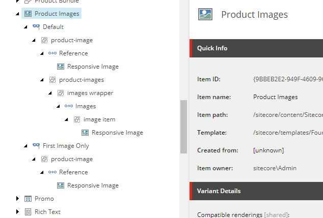

Time to Read: About 10-15 minutes
Intended for: Sitecore Commerce developers and Sitecore developers
Key takeaway: Most Commerce renderings don’t support rendering variants out of the box. This post outlines what you need to know to modify them to work with rendering variants.
Unlike many of the SXA renderings, Commerce renderings don’t support rendering variants. There are however two exceptions. Those being Product Bundles and the Product Information Page Content variant. This doesn’t offer a lot of flexibility for multiple site instances, especially if each site wants a different look and feel for the product page. We ran into this problem with a recent client that needed the flexibility that rendering variants provided on product pages. In this post I’ll go over how we modified the Commerce Catalog renderings to work with rendering variants. Although I’ll be focusing on the Catalog renderings you’ll be able to use these details on the other Commerce renderings as well.
For any rendering to work with rendering variants its rendering model needs to inherit Sitecore.XA.Foundation.Variants.Abstractions.Models.VariantsRenderingModel. This model includes the VariantsFields property which holds the variant definition configured in Sitecore. It’s possible you may be able to get by with just implementing this field on your rendering model and populating it yourself. However there are references to the VariantsRenderingModel in some of the field renders, so you may loose some functionality if we do it that way.
What we need to do is update Sitecore.Commerce.XA.Feature.Catalog.Models.CatalogItemRenderingModel to inherit VariantsRenderingModel. Unfortunately it already inherits it’s own base class BaseCommerceRenderingModel. We’re going to have to recreate it and several other classes to get this to work. Here are the steps I took. You will need a decompiler like dotPeek to reimplement parts of the original Sitecore code.
Sitecore.Commerce.XA.Foundation.Common.Models.BaseCommerceRenderingModel as BaseCommerceVariantsRenderingModel inheriting VariantsRenderingModel insteadSitecore.Commerce.XA.Feature.Catalog.Models.CatalogItemRenderingModel as CatalogItemVariantsRenderingModel inheriting the new BaseCommerceVariantsRenderingModel class.
Another option here is to use pass through properties to the original
CatalogItemRenderingModelto make upgrading easier. I didn’t do that since we made significant updates to the product structure and needed to reimplement much of the model anyway
<commerce.XA>
<models>
<CatalogItemVariantsRenderingModel type="Sandbox.Feature.Catalog.Models.CatalogItemVariantsRenderingModel, Sandbox.Feature.Catalog" />
</models>
</commerce.XA>
Now that we have a new rendering model that works with rendering variants, we need a new repository to populate it. Just like the model we’ll be using the existing repository as a starting point. We’ll be reimplementing Sitecore.Commerce.XA.Foundation.Common.Repositories.BaseCommerceModelRepository as BaseCatalogVariantsRepository. Much of the code will stay the same as the original, you’ll just need to make the following changes.
BaseCommerceRenderingModel with BaseCommerceVariantsRenderingModelCatalogItemRenderingModel with CatalogItemVariantsRenderingModelCurrentCatalogItemRenderingModelKeyName constant to a new value. This will prevent our updates from causing issues with the unmodified renderingsGetProduct methodItem and PageItem property are set to the current catalog item. This will allow catalog fields to be used in the rendering variantNow that we have our new base classes in place we need to update the catalog renderings to use them. For this I’ll use the Product Images rendering as an example. First we’ll need to reimplement the ProductImagesRepository to return our new model. This is pretty easy since it just makes a call to GetProduct in the base repository. All we need to do is ensure that it inherits the BaseCatalogVariantsRepository we just created and a method that returns a CatalogItemVariantsRenderingModel via the GetProduct method from the base class.
Now we need a new controller action for the rendering to hit and a new cshtml view to render. All it needs to do is call the new ProductImagesRepository.
public ActionResult ProductImages()
{
return View(GetRenderingView(nameof(ProductImages)), productImagesRepository.GetProductImagesRenderingModel(visitorContext, null));
}
And we need a simple view file to render the variant we’ll create in Sitecore. The shell will be the same as the original view, but the content will be replaced with a loop for rendering the Variant Fields
<div @Html.Sxa().Component(Model.Rendering.RenderingCssClass ?? "cxa-productimages-component", Model.Attributes)>
<div class="component-content">
@if (Model.Item != null)
{
foreach (BaseVariantField variantField in Model.VariantFields)
{
@Html.RenderingVariants().RenderVariant(variantField, Model.Item, Model.RenderingWebEditingParams, Model)
}
}
</div>
</div>
Now that we have the backend in place we need to wire it all up in Sitecore. For now we’ll just update the out of the box rendering. In practice I highly recommend creating your own version of the rendering through cloning to prevent updates from stepping on our work.
First we need to update the Controller field on the Product Images rendering to our new controller. Then we need to include the /sitecore/templates/Foundation/Experience Accelerator/Variants/Rendering Parameters/IComponentVariant template to the Product Images Parameters template. This is needed to show the variants dropdown in the Experience Accelerator.
Finally we need to create rendering variants in Sitecore so something actually renders to the page. You can use the original view file as a starting point. Below is an example I created with the default being the out of the box look and an alternate that excludes the thumbnails. What you do here is up to you.

This is just one way to go about this. The downside is that you’ll need to modify every rendering you want rendering variant functionality on. Reimplementing the base classes also makes upgrades more difficult if you want to include any new functionality. However rendering variants give the Commerce components the same flexibility that SXA components have. Although this isn’t an exhaustive look at how to integrate rendering variants into Commerce renderings, I hope it gives you a good starting point if you decide to implement this in the future.